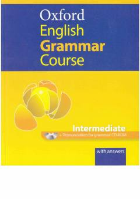

OEO'rta darajadagi o'rganuvchilar uchun ingliz tili grammatikasi bo'yicha amaliy darslik.
Ushbu kitob o'rta va o'rtadan yuqori darajadagi ingliz tili o'rganuvchilari uchun mo'ljallangan amaliy grammatika darsligidir. Unda grammatik qoidalar va ularni mustahkamlash uchun turli mashqlar javoblari bilan taqdim etilgan. Kitob mustaqil o'rganish va darsda foydalanish uchun juda qulay.